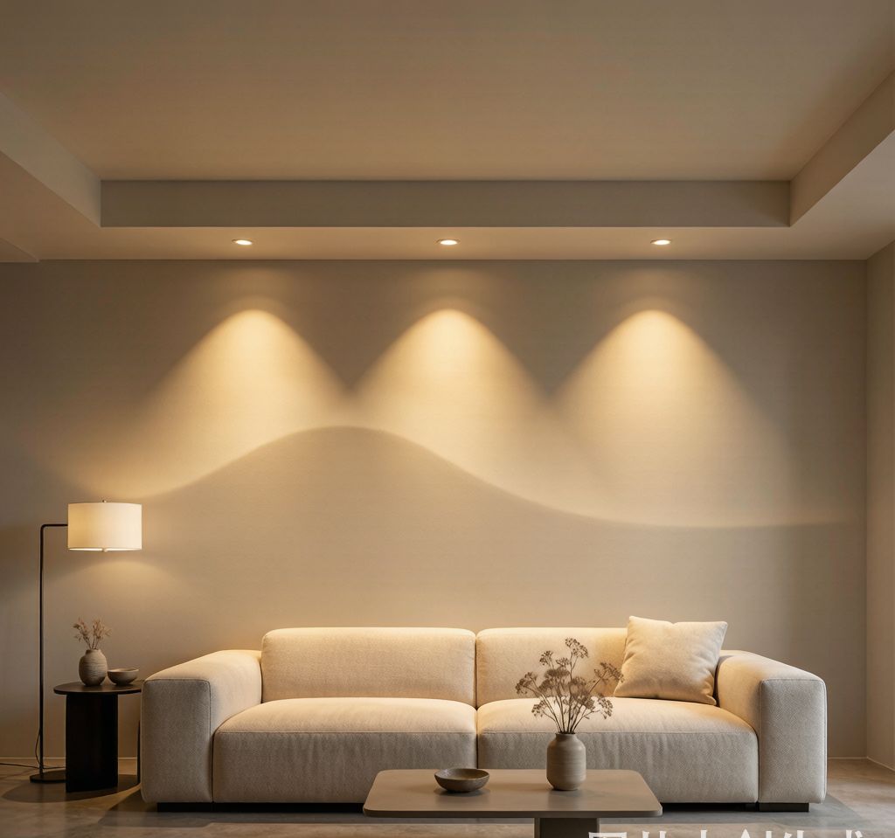
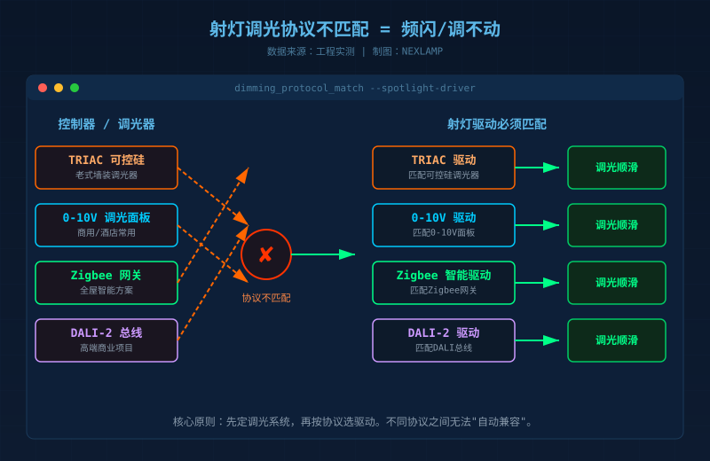
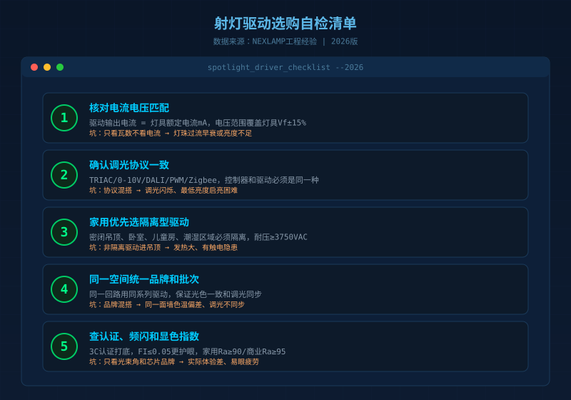

小红书"无主灯翻车"相关笔记已经超过80万篇。翻开评论区，出现最多的不是"灯不够亮"，而是："光斑像狗啃""调光到10%就开始闪""三个月驱动就烧了""同一面墙色温不一致"……
很多人以为是射灯本身不好，其实70%以上的问题出在驱动电源上。射灯只是"演员"，驱动才是背后的"导演"——电流稳不稳、调光顺不顺、寿命长不长，它说了算。
我从事LED驱动电源和智能照明多年，见过太多业主和设计师把预算花在灯具外壳和芯片品牌上，却给驱动留的预算最少。今天这篇文章，帮你把射灯驱动选型的5个常见坑一次说清。
坑1：只看瓦数，不看电流匹配
这是最容易犯的错。很多人买驱动时直接按"12W射灯配12W驱动"下单，结果灯要么偏暗，要么过亮发烫，寿命大幅缩水。
瓦数只是功率，真正决定灯珠生死的是电流。 同一颗COB光源，300mA和350mA驱动下去，亮度可能只差10%，但光衰和发热差一倍。专业做法是：先看灯具标签上的额定电流(mA)和电压范围(Vf)，再选输出电流一致、电压范围覆盖的驱动。
| 检查项 | 错误做法 | 正确做法 |
|---|---|---|
| 电流 | 只看"12W"功率 | 核对灯具额定电流mA |
| 电压 | 忽略Vf范围 | 驱动输出电压覆盖灯具Vf±15% |
| 余量 | 满载运行 | 预留10-15%功率余量 |
一个简单原则：驱动电流必须与灯具额定电流严格一致，电压范围要覆盖，功率可以略大于灯具功率。
坑2：调光协议和驱动"各说各话"
你家买了智能开关、调光面板、Zigbee网关，结果一调光就闪，大概率是协议不匹配。射灯驱动常见的调光方式有五六种：TRIAC可控硅、0-10V、DALI、PWM、Zigbee、蓝牙Mesh。
不同协议之间不能"翻译"。比如：
- 墙上有老式的TRIAC调光器，却配了PWM驱动 → 必闪
- 用了0-10V调光面板，驱动只支持DALI → 调不动
- 买了Zigbee网关，灯具却是普通不可调光驱动 → 只能开关，不能调亮度

避坑方法：做方案前先确定调光系统，再按系统协议选驱动。如果要做全屋智能，建议统一用同一种协议体系，比如涂鸦Zigbee或DALI-2，后期维护和扩展都更省心。
坑3：把非隔离驱动塞进密闭吊顶
为了省几块钱，有些方案用了非隔离驱动。这种驱动成本低、体积小，但输入和输出之间没有电气隔离。如果灯具金属外壳接地不好，或者安装在潮湿、密闭的吊顶里，存在触电和发热风险。
2026年的新趋势是：家用射灯、筒灯尽量选隔离型驱动，尤其是以下场景：
- 客厅、卧室等人员长期停留区域
- 密闭吊顶、无散热通道
- 厨房、卫生间等潮湿环境
- 儿童房、老人房
| 类型 | 优点 | 缺点 | 适用场景 |
|---|---|---|---|
| 隔离型 | 安全、耐压高、EMC好 | 成本略高、体积稍大 | 家用、商业、密闭空间 |
| 非隔离 | 便宜、体积小 | 安全风险、干扰大 | 通风良好、专业工装 |
我的建议：家装项目别省这个钱，隔离驱动是底线。商用项目更要看过3C、CE、EMC认证。
坑4：同一空间混用不同品牌驱动
"这个灯用A品牌驱动，那个灯用B品牌驱动，反正都是12W。"这是很多装修队的常规操作，结果往往很惨烈：
- 同一面墙，两盏灯色温一个偏黄一个偏白
- 调光时有的灯先暗，有的灯后暗
- 低亮度下有的灯频闪，有的不闪
原因很简单：不同品牌的驱动，恒流精度、PWM频率、调光曲线都不一样。即使标称参数相同，实际光输出也可能差很多。
避坑方法：同一空间、同一回路，尽量用同一品牌、同一系列、同一批次的驱动。如果是智能调光系统，最好灯具和驱动来自同一供应商，或者至少保证协议一致。

坑5：只看光束角和芯片，忽视频闪与显色
选射灯时，很多人会问"光束角多少""用的是不是普瑞COB"，却很少问"频闪指数多少""显色指数Ra多少"。
频闪是眼睛疲劳和头痛的隐形元凶。专业标准参考IEEE 1789-2015：频闪指数FI≤0.05、波动深度≤5%才算基本合格。快速检测方法：打开手机相机对准灯光，如果看到黑色条纹滚动，说明有低频频闪。
显色指数Ra决定颜色还原度。家用建议Ra≥90，对色彩要求高的空间（餐厅、画廊、衣帽间）建议Ra≥95。我们NEXLAMP的射灯全系做到Ra98，就是为了避免"照出来的人和菜都发灰"的尴尬。
| 参数 | 家用建议 | 高端/商业建议 |
|---|---|---|
| 显色指数Ra | ≥90 | ≥95 |
| 频闪Pst | ≤1.0 | ≤0.5 |
| 调光深度 | 10%-100% | 1%-100% |
| 光束角偏差 | ±5°以内 | ±3°以内 |
一份可以直接抄的选购清单
如果你正在做无主灯方案，按下面这个顺序检查：
- 先定调光协议：Zigbee/0-10V/DALI/TRIAC，全屋统一
- 再算电流电压：灯具额定mA和Vf范围，驱动必须匹配
- 家用选隔离驱动：安全、稳定、寿命长
- 同一空间统一品牌：避免光色不一致和调光不同步
- 查认证和频闪：3C认证是基础，FI≤0.05更护眼
最后说一句大实话：射灯驱动不是装修里"看得见"的部分，但它决定了你未来几年开灯时的心情。省驱动的钱，往往是后期返修翻倍的开始。
如果你正在做无主灯方案，不确定驱动怎么配，可以带着灯具参数来问我。NEXLAMP做涂鸦Zigbee智能照明和LED驱动电源多年，见得坑多了，帮你省点冤枉钱。
本文基于2026年LED驱动行业公开标准、工程实测经验及家装翻车案例整理。关注我们，持续输出智能照明实用干货。